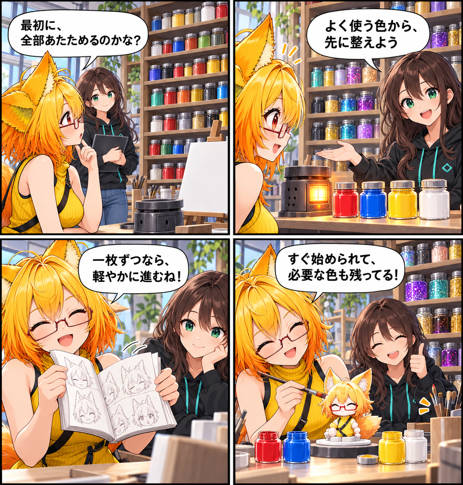

2026.10.28 / Development Log
温めるのは、よく使う色だけ
VABアバターを読み込むときのBlendShape復元を軽くし、シェーダーは対応範囲を保ったまま、よく使うものから準備する形へ見直しました。
今回は development（開発進捗） です。集計期間は2026-10-27 03:00:00 JSTから2026-10-28 02:59:59 JST、参照ブランチはViewerの
main です。集計終了時点のHEADは 56b3a0827ee7a5acdc37fc72864ff964d4c60792、期間内コミットは5件でした。未コミット差分は対象期間の実績と確認できないため含めていません。
BlendShapeの復元を軽く
多くのモーフは位置の差分だけを持ちます。そこで、法線・接線の差分がない場合は大きな空配列を作らず、Unityへも省略したまま渡すようにしました。複数フレームを持つBlendShapeでは、フレームを追加する区切りごとに処理を譲るため、一つのシェイプが長く処理を占有しにくくなります。
保持することと、最初に温めることを分ける
lilToonの対応バリアントは、ビルドから外れないよう保持を続けます。一方で、起動時に先に描画して準備する対象は、基本・カットアウト・透明・アウトラインなど、よく使う種類へ絞りました。特殊なパス、屈折、ファーなどは対応範囲から外さず、必要になった時点で準備します。
重い区間を見つけやすく
BlendShape追加、遅延テクスチャの生成・反映、シェーダーの準備で時間がかかった区間を、計測ログから追えるようにしました。挙動を軽くするだけでなく、次に確認すべき場所を分かりやすくしています。
4コマの裏話
今回は、画材工房の小さなストーブが、よく使う絵の具だけを先に温める寸劇です。珍しい色も棚にきちんと保管されたままなので、対応範囲を狭めずに開始時の支度を穏やかにする感覚を表しました。
まとめ
全部を同じタイミングで準備するのではなく、必要な形で保持し、よく使うものから整える方針へ進めました。読み込みの最初の一歩を、より軽く予測しやすいものにしていきます。
本日のひとこと
先に温める色を選べば、描き始めるまでの時間がやさしくなる。